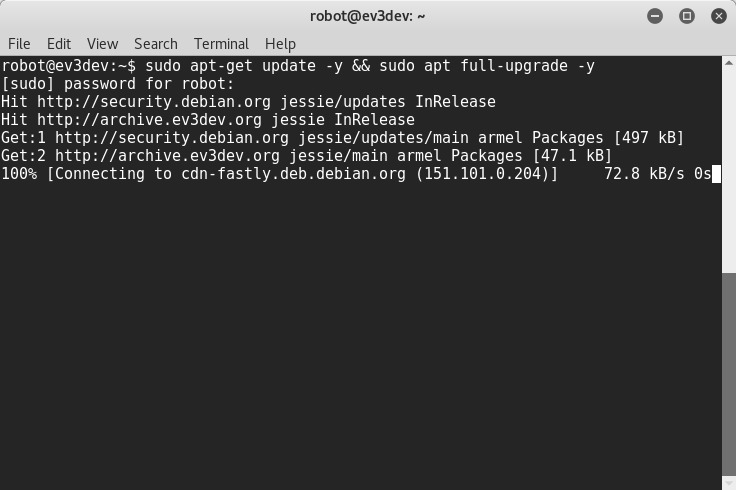

hello
connect computer to Lego ev3 via USB cable
1). open terminal, type the follow command
sudo ifconfig usb0 10.42.0.1
troubleshooting, type
sudo ifconfig
to see either
usb0
,
usb1
exist or not
2). use ssh to access ev3dev, default username is robot, password is maker
ssh 10.42.0.3 -l robot
code/ev3dev-connecting-to-the-internet/via-usb.sh
1). create a empty file call
via-usb.sh
in code user code direcotry
cd ~
mkdir code
cd code
touch via-usb.sh
use geany IDE to edit via-usb.sh
geany via-usb.sh
type the follow code in the file,
CRTL+S
to save the content,
ALT+F4
to quit geany.
for case don’t have geany
use vi RAW IDE to edit via-usb.sh
vi via-usb.sh
type the follow code in the file,
shirt+i
to start typing,
shirt+;
to enter command mode, type
:wq
to write and quit.
caution: if computer access Internet via WiFi, change eth0 to wlan0 in line 3.
#!/bin/sh
ifconfig usb0 10.42.0.1
iptables --table nat --append POSTROUTING --out-interface eth0 -j MASQUERADE
iptables --append FORWARD --in-interface usb0 -j ACCEPT
echo 1 > /proc/sys/net/ipv4/ip_forward
gain execute pressmission to the via-usb.sh
chmod +x via-sub.sh
execute the via-usb.sh with priilage right
sudo ./via-sub.sh
code/ev3dev-connecting-to-the-internet/via-wifi-adapter
// TODO
1). attach WiFi adapter to ev3-brick USB port, using the ev3dev brick menu config wireless connection
something you already know
just press the hotspot sign to enable it


// TODO
take photo of setup wifi connect via brick gui interface
username : robot
password : maker
ssh 10.42.0.3 -l robot
switch user to root
sudo su
apt-get udpate -y & apt full-upgrade -y


echo "hello world"
especk "hello world" --stdout | aplay
last moditify : Sunday, 07. May 2017 01:50AM